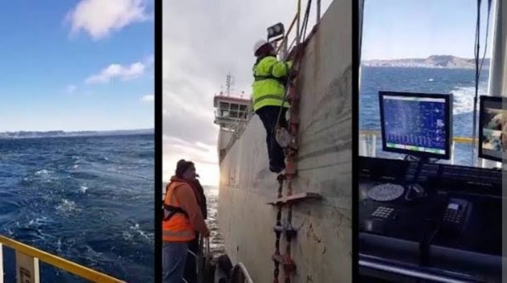
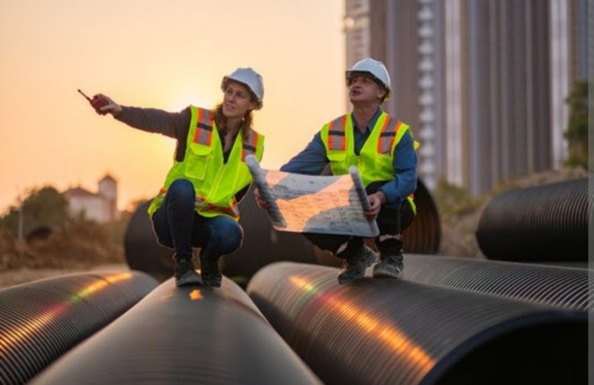
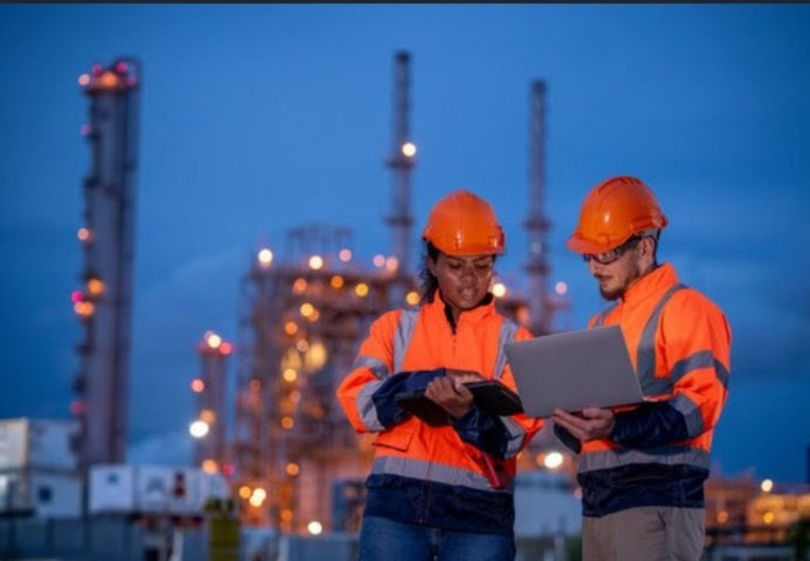
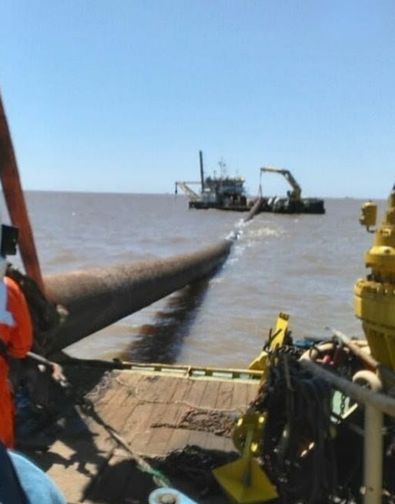
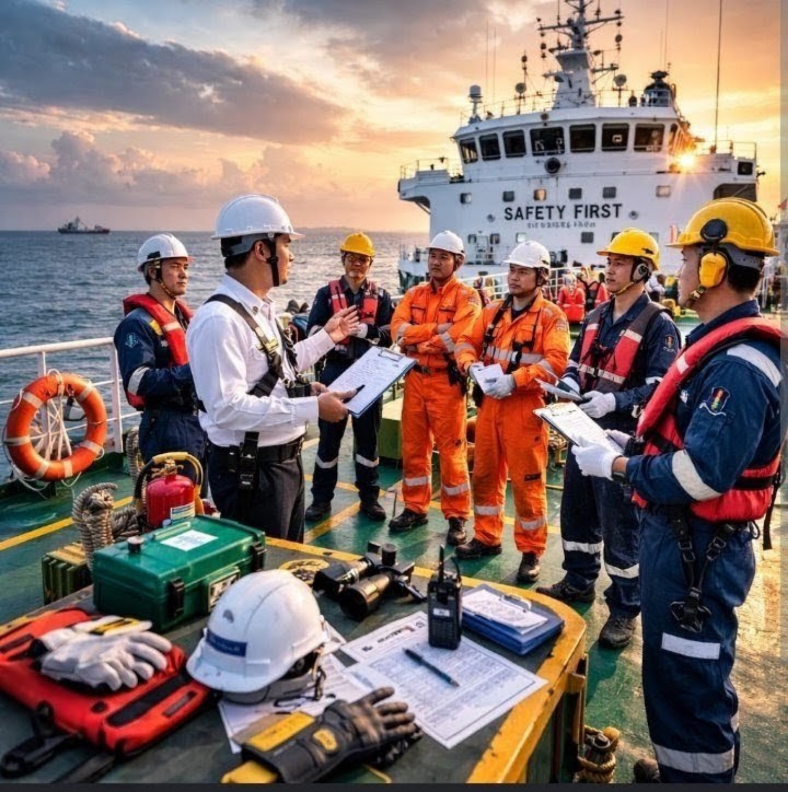

Estamos donde sucede la operación.
Supervisión precisa, directamente a bordo de las embarcaciones. Acompañamos cada proyecto en el lugar, controlando el desarrollo de los trabajos y velando por los intereses de nuestros clientes.
de experiencia en operaciones fluviales, dragas, remolcadores, embarcaciones auxiliares y trabajos hidrográficos.
En el lugar. A bordo. Con el cliente.Información de campo para tomar decisiones con mayor precisión.

No supervisamos desde un escritorio.
LP Soluciones Logísticas lleva la supervisión al ámbito donde realmente sucede el trabajo: a bordo de las embarcaciones y en el lugar de la operación.
Vemos lo que sucede. Controlamos. Informamos.
Nuestra presencia a bordo permite una supervisión cercana y precisa de cada proyecto, con foco en la operación y en la protección de los intereses del cliente.




Control y asistencia para operaciones fluviales.
Un enfoque práctico y flexible para acompañar proyectos de dragado, puertos y vías navegables.
Supervisión de dragado
Seguimiento de tareas, equipos, operación, avance y objetivos.
Control de contratistas
Verificación en campo y seguimiento de cumplimiento de trabajos.
Inspección fluvial
Relevamiento de condiciones operativas y observaciones técnicas.
Evaluación de proyectos
Análisis de necesidades y alternativas de ejecución.
Seguimiento de obra
Informes de avance, incidencias y puntos críticos.
Asistencia técnica
Apoyo profesional para puertos, terminales y empresas fluviales.
Del lugar de trabajo al informe del cliente.
Presencia
Estamos en el lugar y acompañamos la operación.
Observación
Registramos condiciones, avances y puntos críticos.
Control
Contrastamos lo observado con los objetivos del proyecto.
Informe
Entregamos información clara para la toma de decisiones.
Conocemos el trabajo desde adentro.
La experiencia directa en operaciones fluviales permite comprender las exigencias reales de una embarcación, una draga y una obra en el agua.
Hablemos de su próximo proyecto.
Si necesita supervisión, control operativo o asistencia técnica en trabajos fluviales y dragado, estamos preparados para acompañarlo en el lugar.